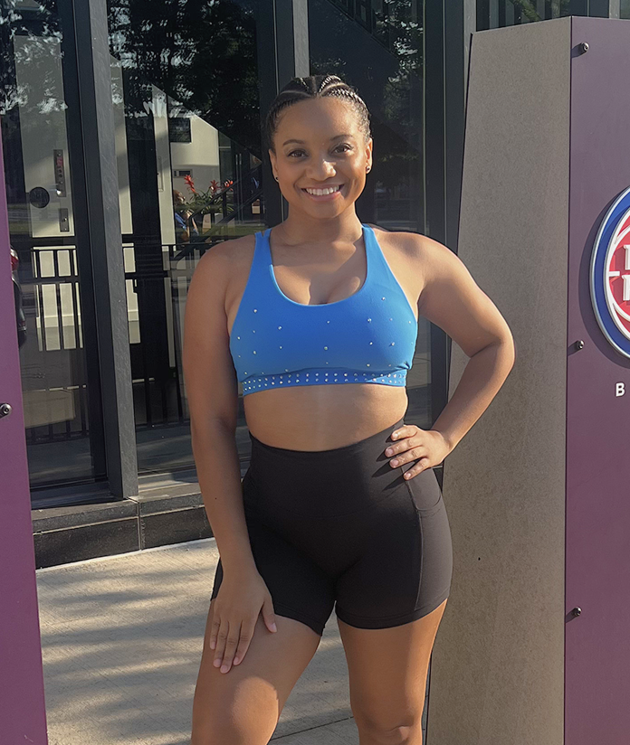

Welcome to my blog! Today I’ll be talking about the time I tried out for the Detroit Pistons Dance Team. I had to wake up super early and hurry to do my makeup so I could look all glammed up. Once I finally left the house and got there, I saw so many people. I felt nervous but excited, and I kept telling myself to just have fun. Luckily, I met two people at one of their dance clinics, so I felt less alone during the experience. First, we warmed up together as a group and learned two different routines: one jazz and one hip-hop. For each routine, we had to go in groups and show the judges what we had. Thanks to my dance skills, I was able to pass round one and make it to the final tryout day the next day. Sadly, I didn’t make the team that day, but I had a blast and can’t wait to try again next year!
